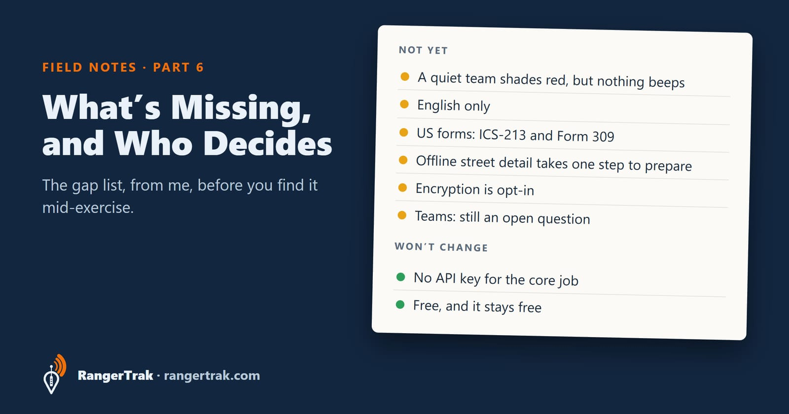
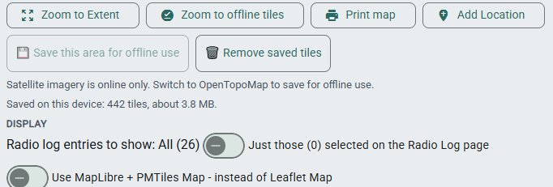

Field Notes · Part 6
What's Missing, and Who Decides

RangerTrak is a free, open-source radio log and map for the scribe at a CERT, ACS/ARES, SAR or wildland-fire command post. Log who, where, when and what off the radio; it maps them. It works offline once set up, and prints the Form 309 Communications Log and the ICS-213. I built it. It’s AGPL and will stay free. Try it at rangertrak.org, no account or install needed.
In Part 1 I said RangerTrak works, is used, and has rough edges, and that I'd rather you heard about the edges from me than found them mid-exercise. This post is where I make good on that. No feature tour this time — just the gap list stated plainly, the handful of things about this project that won't change no matter what, and a genuine question about what's next that I can't answer alone.
What's missing, plainly

- A quiet team shows, but nothing interrupts you. Set your mission’s expected check-in interval and the map, the roster and the Radio Log shade a team from green through amber to red as it falls behind. But nothing beeps or pops up, so someone has to be looking. An alert that gets your attention is real work I haven’t done yet, not a design choice.
- It's English-only, with no framework underneath it for another language yet. Every coordinate format works anywhere in the world; the words around them don't.
- The forms it prints are the US ones — ICS-213 and the Form 309 Communications Log, FEMA's and the ARES/ham community's own. If your agency uses something else, I don't yet know what that looks like.
- Offline street detail is only as good as your preparation. The built-in map is a low-detail world map (only the demo missions bring streets of their own), so you’re never looking at a blank screen — but a low-detail background still isn’t streets. Save your area on the street map, or load a map file for it. Part 3 shows how.
- Encryption is opt-in, and the app doesn’t lock itself. The roster holds real names, phone numbers and call signs. Mission backups can take a passphrase, and device encryption can lock the roster, the radio log, after-action notes and photos on this device behind a passphrase you enter each time the app opens. Both are off until you turn them on, and a forgotten passphrase can’t be recovered. Device encryption protects a lost or stolen device, not one someone is using while it’s unlocked, and roster and spreadsheet exports are always plain files: lock the screen, treat an export like a printed roster, and delete it when the mission’s over.
- Teams are still an open question. I haven't built a real notion of a team as a group of people that reports as one, on purpose. I'm talking with testers first, and a later post in this series asks how teams actually work where you are. Until that answer is in, Teams stays open rather than guessed at.



None of that is a secret I'm confessing under pressure. It's the same list I'd want handed to me before I trusted a tool on a real callout, so it's the list I'm handing you.
What won't change
A few things about RangerTrak are commitments, not features, and they don't move regardless of what gets built next:
- Capability, not policy. RangerTrak gives you the ability to do something and lets your team decide the rule around it — it doesn't hard-code what “overdue” means, what your status names are, or what a location category is called. That's true of every setting you can already rename today, and it's why a team counts as late against the check-in interval you set, not one I assumed for everyone.
- No API key, ever, for the core job. Nothing to sign up for before a callout, nothing that expires mid-incident. Anything that ever does need a key will be optional and will say so honestly rather than quietly failing.
- Free, and it stays free. Using RangerTrak — at your EOC, your exercise, your incident — costs nothing today and will cost nothing later. It's licensed under the AGPL, which places no obligations at all on anyone who simply uses it; the obligations only apply if someone modifies it and redistributes it, or runs a modified copy as a service.
Direction, without a date attached
I'm not going to promise a roadmap with dates on it — this project is pre-1.0 and changes fast enough that a date I gave you today would likely be wrong by the time you read this. What I can tell you is the shape of where I'm looking. A real notion of a team is one, gated on what that post's question turns up. And I'm exploring — genuinely exploring, nothing built, nothing promised — whether a report should ever be exportable in a form a radio-native tool like FLMSG or Winlink could pick up directly, for teams that already have that pipeline running. If that turns out to matter to real net traffic, I'll build it. If it doesn't, I won't, and that's the point of asking rather than guessing.
An invitation, not a pitch
Everything in this series has pointed at the same ask: try a piece of it, tell me what broke. The single best version of that is a real exercise. If your team is already planning a tabletop, a CERT class, or a drill in the next few months, I'd like to help you try RangerTrak as part of it — setting up a device beforehand, walking through what to expect, whatever's useful — and with your permission, I'd like to write up how it went. Real evidence from a real exercise is worth more to this project than anything I could design at a keyboard alone.
Try it in ten minutes
- Reread the gap list above next to how your team actually runs an incident. Which one would stop you from using RangerTrak for real today, and which ones could you work around?
- If you tried something from an earlier post and didn't tell me, this is the moment — a short note on any of them, even weeks later, is still useful.
- If a tabletop or exercise is anywhere on your calendar, reply and say so, even if the date isn't firm yet.
New to RangerTrak? The RangerTrak Tour Guide walks you through the app hands-on, one module at a time.
Tell me
- What would your team need before you'd trust RangerTrak on a real callout? Be specific — a missing feature, a gap on the list above, or something about how it's built that just doesn't fit how you work.
- Of the six gaps listed above, which one actually matters to you, and which ones don't?
- Would you run a tabletop with me? Big or small, I'll help however's useful.
Use the feedback form (start with “Blog 6”), Help → feedback inside the app, or email RangerTrak [at] steadyeoc [dot] com.
One more thing, said once and not again: RangerTrak is free and will stay free. If it's useful to your team and you'd like to help keep it going, you can buy me a coffee. That goes to me personally, not a charity, so it isn't tax-deductible. Honest feedback is worth just as much.
Thank you for reading this far, and more than that, for the people who actually tried something and wrote back. This series started as me showing you a tool I built alone in the hope that it's useful to people who run real nets. If it works at all, it ends with a slightly different tool, because you told me where it was wrong.
The series
- The Paper Log, Without the Paper
- Hot, Warm, Cold
- However They Read It Out: coordinates and maps
- From Radio Log to Form 309 and ICS-213
- More Than One Laptop: field phones, report handoff, a live view for the IC
- What's Missing, and Who Decides (this post)
- Your Roster Is Already in a Spreadsheet
- Shift Change: Op Periods, Scribes and Laptops
- After the Mission: Summaries, AAR and the Final Report
- Field Phones, Up Close
- RangerView
- People, Teams and Places: help me get this right
Next: Your Roster Is Already in a Spreadsheet. Bring the lists your group already keeps into RangerTrak, see what will change before anything does, and never lose a phone number.